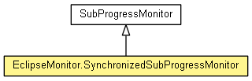

org.eclipse.net4j.util.om.monitor
Class EclipseMonitor.SynchronizedSubProgressMonitor
java.lang.Object
 org.eclipse.core.runtime.ProgressMonitorWrapper
org.eclipse.core.runtime.SubProgressMonitor
org.eclipse.net4j.util.om.monitor.EclipseMonitor.SynchronizedSubProgressMonitor
org.eclipse.core.runtime.ProgressMonitorWrapper
org.eclipse.core.runtime.SubProgressMonitor
org.eclipse.net4j.util.om.monitor.EclipseMonitor.SynchronizedSubProgressMonitor
- All Implemented Interfaces:
- org.eclipse.core.runtime.IProgressMonitor, org.eclipse.core.runtime.IProgressMonitorWithBlocking
- Enclosing class:
- EclipseMonitor
- public static class EclipseMonitor.SynchronizedSubProgressMonitor
- extends org.eclipse.core.runtime.SubProgressMonitor

A sub progress monitor that synchronizes all methods on the parent monitor instance.
- Since:
- 3.0
| Fields inherited from class org.eclipse.core.runtime.SubProgressMonitor |
PREPEND_MAIN_LABEL_TO_SUBTASK, SUPPRESS_SUBTASK_LABEL |
| Fields inherited from interface org.eclipse.core.runtime.IProgressMonitor |
UNKNOWN |
| Methods inherited from class org.eclipse.core.runtime.ProgressMonitorWrapper |
getWrappedProgressMonitor |
| Methods inherited from class java.lang.Object |
clone, equals, finalize, getClass, hashCode, notify, notifyAll, toString, wait, wait, wait |
EclipseMonitor.SynchronizedSubProgressMonitor
public EclipseMonitor.SynchronizedSubProgressMonitor(org.eclipse.core.runtime.IProgressMonitor monitor,
int ticks)
beginTask
public void beginTask(String name,
int totalWork)
- Specified by:
beginTask in interface org.eclipse.core.runtime.IProgressMonitor- Overrides:
beginTask in class org.eclipse.core.runtime.SubProgressMonitor
clearBlocked
public void clearBlocked()
- Specified by:
clearBlocked in interface org.eclipse.core.runtime.IProgressMonitorWithBlocking- Overrides:
clearBlocked in class org.eclipse.core.runtime.ProgressMonitorWrapper
done
public void done()
- Specified by:
done in interface org.eclipse.core.runtime.IProgressMonitor- Overrides:
done in class org.eclipse.core.runtime.SubProgressMonitor
internalWorked
public void internalWorked(double work)
- Specified by:
internalWorked in interface org.eclipse.core.runtime.IProgressMonitor- Overrides:
internalWorked in class org.eclipse.core.runtime.SubProgressMonitor
isCanceled
public boolean isCanceled()
- Specified by:
isCanceled in interface org.eclipse.core.runtime.IProgressMonitor- Overrides:
isCanceled in class org.eclipse.core.runtime.ProgressMonitorWrapper
setBlocked
public void setBlocked(org.eclipse.core.runtime.IStatus reason)
- Specified by:
setBlocked in interface org.eclipse.core.runtime.IProgressMonitorWithBlocking- Overrides:
setBlocked in class org.eclipse.core.runtime.ProgressMonitorWrapper
setCanceled
public void setCanceled(boolean b)
- Specified by:
setCanceled in interface org.eclipse.core.runtime.IProgressMonitor- Overrides:
setCanceled in class org.eclipse.core.runtime.ProgressMonitorWrapper
setTaskName
public void setTaskName(String name)
- Specified by:
setTaskName in interface org.eclipse.core.runtime.IProgressMonitor- Overrides:
setTaskName in class org.eclipse.core.runtime.ProgressMonitorWrapper
subTask
public void subTask(String name)
- Specified by:
subTask in interface org.eclipse.core.runtime.IProgressMonitor- Overrides:
subTask in class org.eclipse.core.runtime.SubProgressMonitor
worked
public void worked(int work)
- Specified by:
worked in interface org.eclipse.core.runtime.IProgressMonitor- Overrides:
worked in class org.eclipse.core.runtime.SubProgressMonitor
Copyright (c) 2004 - 2012 Eike Stepper (Berlin, Germany) and others.